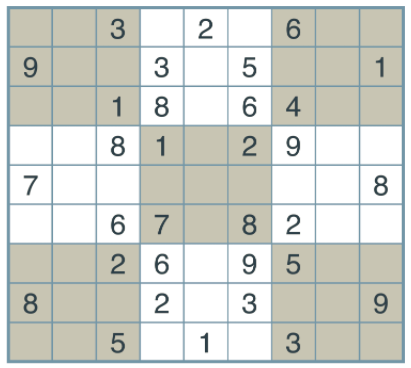
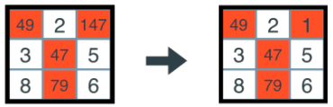

<!DOCTYPE HTML>
<html>
<head><meta name="generator" content="Hexo 3.9.0">
    <meta charset="utf-8">
    <meta http-equiv="X-UA-Compatible" content="chrome=1">
    <meta name="viewport" content="width=device-width, initial-scale=1, maximum-scale=1, user-scalable=no">

    

    <title>数独AI | 做时间的朋友</title>
    
        <meta name="author" content="Josh">
    
    
        <meta name="description" content="Critical Thinking and Practice">
    
    
    <meta name="viewport" content="width=device-width, initial-scale=1, maximum-scale=1">

    
        <meta property="og:title" content="数独AI">
    
    <meta property="og:site_name" content="思行斋">

    
        <meta property="og:image" content="undefined">
    

    <link rel="icon" type="image/png" href="/favicon.png">
    <link rel="alternate" href="/atom.xml" title="思行斋" type="application/atom+xml">
    <link rel="stylesheet" href="/css/lib/materialize.min.css">
    <link rel="stylesheet" href="/css/lib/font-awesome.min.css">
    <link rel="stylesheet" href="/css/style.css" media="screen" type="text/css">
    

    
        <link rel="stylesheet" href="/css/lib/prettify-tomorrow-night-eighties.css" type="text/css">
    
    <!--[if lt IE 9]><script src="//html5shiv.googlecode.com/svn/trunk/html5.js"></script><![endif]-->
</head>
</html>

<body>
    

    <nav class="indigo">
    <div class="nav-wrapper">
        <a href="#" data-activates="main-menu" class="button-collapse">
            <i class="fa fa-navicon"></i>
        </a>
        <div class="">
            <a href="/" class="brand-logo hide-on-med-and-down">思行斋</a>
            <ul class="right hide-on-med-and-down">
                
                    <li>
                        <a class="menu-home " href="/" >
                            <i class="fa fa-home "></i>
                            
                            Home
                        </a>
                    </li>
                
                    <li>
                        <a class="menu-archive " href="/archives" >
                            <i class="fa fa-archive "></i>
                            
                            Archives
                        </a>
                    </li>
                
                    <li>
                        <a class="menu-category category-menu" href="javascript:;" data-activates="category-menu" >
                            <i class="fa fa-bookmark "></i>
                            
                            Categories
                        </a>
                    </li>
                
                    <li>
                        <a class="menu-reading " href="/reading" >
                            <i class="fa fa-book "></i>
                            
                            Reading
                        </a>
                    </li>
                
                    <li>
                        <a class="menu-about " href="/about" >
                            <i class="fa fa-user "></i>
                            
                            About
                        </a>
                    </li>
                
                    <li>
                        <a class="menu-search modal-trigger " href="#search" >
                            <i class="fa fa-search "></i>
                            
                            Search
                        </a>
                    </li>
                
            </ul>
            <div>
    <ul class="side-nav indigo darken-1" id="main-menu">
        
        <li class="side-user">
            <div class="row">
                <div class="col s4 no-padding">
                    
                </div>
                <div class="info col s8 valign-wrapper no-padding">
                    <div class="valign">
                        <p class="name">你的大名</p>
                        <p class="desc">全栈/区块链</p>
                    </div>
                </div>
            </div>
        </li>
        

        
            <li class="no-padding">
                <a class="waves-effect menu-home " href="/" >
                    <i class="fa fa-home "></i>
                    
                    Home
                </a>
            </li>
        
            <li class="no-padding">
                <a class="waves-effect menu-archive " href="/archives" >
                    <i class="fa fa-archive "></i>
                    
                    Archives
                </a>
            </li>
        
            <li class="no-padding">
                <a class="waves-effect menu-category category-menu" href="javascript:;" data-activates="category-menu" >
                    <i class="fa fa-bookmark "></i>
                    
                    Categories
                </a>
            </li>
        
            <li class="no-padding">
                <a class="waves-effect menu-reading " href="/reading" >
                    <i class="fa fa-book "></i>
                    
                    Reading
                </a>
            </li>
        
            <li class="no-padding">
                <a class="waves-effect menu-about " href="/about" >
                    <i class="fa fa-user "></i>
                    
                    About
                </a>
            </li>
        
            <li class="no-padding">
                <a class="waves-effect menu-search modal-trigger " href="#search" >
                    <i class="fa fa-search "></i>
                    
                    Search
                </a>
            </li>
        
    </ul>

    <ul class="side-nav indigo darken-1" id="category-menu">
    

            

            <li class="collapse-level-0" collapse-level="0">
                <a class="no-padding" href="/categories/FrontEnd/">
                    FrontEnd <span class="right">1</span></a>
                </a>
            </li>

        

            <li class="collapse-level-0" collapse-level="0">
                <a class="no-padding" href="/categories/OJ/">
                    OJ <span class="right">1</span></a>
                </a>
            </li>

        

            <li class="collapse-level-0" collapse-level="0">
                <a class="no-padding" href="/categories/AI/">
                    AI <span class="right">1</span></a>
                </a>
            </li>

        

    </ul>
</div>

        </div>
    </div>
</nav>

<div id="search" class="modal search-modal">
    <div class="row">
        <div class="input-field col s12">
              <input id="search-input" type="text">
              <label for="search-input">Search</label>
        </div>

    </div>
    <div id="search-result" class="search-result col s12">

    </div>
</div>


    <main>
        <div class="container main-container">
    <nav class="page-nav hide-on-small-only">
    <div class="nav-wrapper indigo">
        <span class="breadcrumb">Current page(Categories)</span>
        
            
    
    
    <a class="breadcrumb" href="/categories/AI/">AI</a>


        

        
    </div>
</nav>

<article>
    <div class="card">
        <div class="card-content">
            

            <div class="article-title">
                
    
        <h1>数独AI</h1>
    


            </div>
            <time class="pink-link-context" datetime="2018-02-02T15:52:50.000Z"><a href="/2018/02/02/Sudoku_AI/">2018-02-02</a></time>

            
    <div class="tags-row">
        
            <a href="/tags/Basic/" class="chip pink lighten-1">Basic</a>
        
    </div>


            <div class="toc pink-link-context hide-on-med-and-down">
    <ol class="section table-of-contents"><li class="section table-of-contents-item section table-of-contents-level-1"><a class="section table-of-contents-link" href="#一、问题描述"><span class="section table-of-contents-text">一、问题描述</span></a><ol class="section table-of-contents-child"><li class="section table-of-contents-item section table-of-contents-level-2"><a class="section table-of-contents-link" href="#1-1-问题记录方式"><span class="section table-of-contents-text">1.1 问题记录方式</span></a></li><li class="section table-of-contents-item section table-of-contents-level-2"><a class="section table-of-contents-link" href="#1-2-字典方式记录"><span class="section table-of-contents-text">1.2 字典方式记录</span></a><ol class="section table-of-contents-child"><li class="section table-of-contents-item section table-of-contents-level-3"><a class="section table-of-contents-link" href="#1-2-1-所有key值数组"><span class="section table-of-contents-text">1.2.1 所有key值数组</span></a></li><li class="section table-of-contents-item section table-of-contents-level-3"><a class="section table-of-contents-link" href="#1-2-2-规则单元"><span class="section table-of-contents-text">1.2.2 规则单元</span></a></li><li class="section table-of-contents-item section table-of-contents-level-3"><a class="section table-of-contents-link" href="#1-2-3-指定单元格所属规则单元"><span class="section table-of-contents-text">1.2.3 指定单元格所属规则单元</span></a></li></ol></li><li class="section table-of-contents-item section table-of-contents-level-2"><a class="section table-of-contents-link" href="#1-3-记录方式转换"><span class="section table-of-contents-text">1.3 记录方式转换</span></a></li></ol></li><li class="section table-of-contents-item section table-of-contents-level-1"><a class="section table-of-contents-link" href="#二、策略1：过滤淘汰"><span class="section table-of-contents-text">二、策略1：过滤淘汰</span></a></li><li class="section table-of-contents-item section table-of-contents-level-1"><a class="section table-of-contents-link" href="#三、策略2：唯一可选"><span class="section table-of-contents-text">三、策略2：唯一可选</span></a></li><li class="section table-of-contents-item section table-of-contents-level-1"><a class="section table-of-contents-link" href="#四、策略3：约束搜索"><span class="section table-of-contents-text">四、策略3：约束搜索</span></a></li></ol>
</div>


            <div class="entry pink-link-context">
                <p>学习是为了寻找解决问题的答案，若脱离了问题只为知晓而进行的打call，那么随时间流逝所沉淀下来的，估计就只有“重在参与”的虚幻存在感了，自学的人就更应善于发现可供解决的问题。为了入门AI，定个小目标，解决数独问题。</p>
<h1 id="一、问题描述"><a href="#一、问题描述" class="headerlink" title="一、问题描述"></a>一、问题描述</h1><p></p>
<p>一个9*9的方格中，部分方格已预先填入数字，目的是按照如下规则将空白方格填上1-9中的一个：</p>
<ol>
<li>每个方格中填且仅填一个数字，数字取值范围1-9</li>
<li>以<strong>每行</strong>九个方格为单元来看，1-9每个数字都要出现，且仅出现一次</li>
<li>以<strong>每列</strong>九个方格为单元来看，1-9每个数字都要出现，且仅出现一次</li>
<li>以<strong>3*3</strong>九个方格为单元来看，1-9每个数字都要出现，且仅出现一次</li>
</ol>
<blockquote>
<p>描述问题是解决问题的第一步（将问题转化为程序所能理解的数据模型，才能做进一步有效地思考）</p>
</blockquote>
<h2 id="1-1-问题记录方式"><a href="#1-1-问题记录方式" class="headerlink" title="1.1 问题记录方式"></a>1.1 问题记录方式</h2><ol>
<li>从左到右从上到下，以一个字符串的方式记下所有方格中的内容，有数字记数字，空白记作点（.），如：<code>..3.2.6..9..3.5..1..18.64....81.29..7.......8..67.82....26.95..8..2.3..9..5.1.3..</code></li>
<li>以字典的方式记录，将每行标记为<code>ABCDEFGHI</code>，每列标记为<code>123456789</code>，字典的<code>key</code>值为标记的单元格描述，如：<code>A1</code>,<code>G4</code>等；字典的<code>value</code>值为方格中的记录：有数字记数字，空白记作点（.）<figure class="highlight py"><table><tr><td class="gutter"><pre><span class="line">1</span><br><span class="line">2</span><br><span class="line">3</span><br><span class="line">4</span><br><span class="line">5</span><br><span class="line">6</span><br><span class="line">7</span><br><span class="line">8</span><br><span class="line">9</span><br></pre></td><td class="code"><pre><span class="line">&#123;</span><br><span class="line">  <span class="string">'A1'</span>: <span class="string">'.'</span></span><br><span class="line">  <span class="string">'A2'</span>: <span class="string">'.'</span>,</span><br><span class="line">  <span class="string">'A3'</span>: <span class="string">'3'</span>,</span><br><span class="line">  <span class="string">'A4'</span>: <span class="string">'.'</span>,</span><br><span class="line">  <span class="string">'A5'</span>: <span class="string">'2'</span>,</span><br><span class="line">  ...</span><br><span class="line">  <span class="string">'I9'</span>: <span class="string">'.'</span></span><br><span class="line">&#125;</span><br></pre></td></tr></table></figure>
</li>
</ol>
<blockquote>
<p>字符串方式，记录简洁占用空间小，但处理起来比较麻烦；字典方式，方便查找处理，但记录空间较大。</p>
</blockquote>
<p>所以，我们以字符串方式记录存储，以字典方式进行运算求解。那么在运算求解前需要对<strong>记录方式的转换</strong>。</p>
<h2 id="1-2-字典方式记录"><a href="#1-2-字典方式记录" class="headerlink" title="1.2 字典方式记录"></a>1.2 字典方式记录</h2><h3 id="1-2-1-所有key值数组"><a href="#1-2-1-所有key值数组" class="headerlink" title="1.2.1 所有key值数组"></a>1.2.1 所有<code>key</code>值数组</h3><figure class="highlight py"><table><tr><td class="gutter"><pre><span class="line">1</span><br><span class="line">2</span><br><span class="line">3</span><br><span class="line">4</span><br><span class="line">5</span><br><span class="line">6</span><br><span class="line">7</span><br></pre></td><td class="code"><pre><span class="line">rows = <span class="string">'ABCDEFGHI'</span></span><br><span class="line">cols = <span class="string">'123456789'</span></span><br><span class="line"></span><br><span class="line"><span class="function"><span class="keyword">def</span> <span class="title">cross</span><span class="params">(a, b)</span>:</span></span><br><span class="line">    <span class="keyword">return</span> [s+t <span class="keyword">for</span> s <span class="keyword">in</span> a <span class="keyword">for</span> t <span class="keyword">in</span> b]</span><br><span class="line"></span><br><span class="line">boxes = cross(rows, cols)</span><br></pre></td></tr></table></figure>
<h3 id="1-2-2-规则单元"><a href="#1-2-2-规则单元" class="headerlink" title="1.2.2 规则单元"></a>1.2.2 规则单元</h3><figure class="highlight py"><table><tr><td class="gutter"><pre><span class="line">1</span><br><span class="line">2</span><br><span class="line">3</span><br><span class="line">4</span><br></pre></td><td class="code"><pre><span class="line">row_units = [cross(r, cols) <span class="keyword">for</span> r <span class="keyword">in</span> rows]</span><br><span class="line">column_units = [cross(rows, c) <span class="keyword">for</span> c <span class="keyword">in</span> cols]</span><br><span class="line">square_units = [cross(rs, cs) <span class="keyword">for</span> rs <span class="keyword">in</span> (<span class="string">'ABC'</span>,<span class="string">'DEF'</span>,<span class="string">'GHI'</span>) <span class="keyword">for</span> cs <span class="keyword">in</span> (<span class="string">'123'</span>,<span class="string">'456'</span>,<span class="string">'789'</span>)]</span><br><span class="line">unitlist = row_units + column_units + square_units</span><br></pre></td></tr></table></figure>
<h3 id="1-2-3-指定单元格所属规则单元"><a href="#1-2-3-指定单元格所属规则单元" class="headerlink" title="1.2.3 指定单元格所属规则单元"></a>1.2.3 指定单元格所属规则单元</h3><figure class="highlight py"><table><tr><td class="gutter"><pre><span class="line">1</span><br><span class="line">2</span><br></pre></td><td class="code"><pre><span class="line">units = dict((s, [u <span class="keyword">for</span> u <span class="keyword">in</span> unitlist <span class="keyword">if</span> s <span class="keyword">in</span> u]) <span class="keyword">for</span> s <span class="keyword">in</span> boxes)</span><br><span class="line">peers = dict((s, set(sum(units[s],[]))-set([s])) <span class="keyword">for</span> s <span class="keyword">in</span> boxes)</span><br></pre></td></tr></table></figure>
<h2 id="1-3-记录方式转换"><a href="#1-3-记录方式转换" class="headerlink" title="1.3 记录方式转换"></a>1.3 记录方式转换</h2><figure class="highlight py"><table><tr><td class="gutter"><pre><span class="line">1</span><br><span class="line">2</span><br></pre></td><td class="code"><pre><span class="line"><span class="function"><span class="keyword">def</span> <span class="title">grid_values</span><span class="params">(grid)</span>:</span></span><br><span class="line">    <span class="keyword">return</span> dict(zip(boxes, grid))</span><br></pre></td></tr></table></figure>
<p><code>zip()</code> 将可迭代的对象作为参数，把对象中对应的元素打包成一个个元组，然后返回由这些元组组成的列表</p>
<h1 id="二、策略1：过滤淘汰"><a href="#二、策略1：过滤淘汰" class="headerlink" title="二、策略1：过滤淘汰"></a>二、策略1：过滤淘汰</h1><p>首先明确一个概念：</p>
<ul>
<li>规则单元：一个方格所属的水平行、垂直列以及3*3方阵的所有方格</li>
<li>规则同胞：一个方格的规则单元中除了自己的其他方格</li>
</ul>
<p>如果没有任何限制，每个方格可填入的数字可以是<code>123456789</code>中的任何一个，而根据数独游戏规则，预先填入数字的方格会限制，该方格的<strong>规则单元</strong>中，其他待填数方格的数字取值范围。所以显而易见的解决策略，便是根据限制规则，缩小取值范围。</p>
<p>开始进行过滤淘汰之前，我们需要的初始数独方格字典中，代表空方格的（.）用可取值的数字范围替换，初始范围为<code>123456789</code><br><figure class="highlight py"><table><tr><td class="gutter"><pre><span class="line">1</span><br><span class="line">2</span><br><span class="line">3</span><br><span class="line">4</span><br><span class="line">5</span><br><span class="line">6</span><br><span class="line">7</span><br><span class="line">8</span><br><span class="line">9</span><br></pre></td><td class="code"><pre><span class="line"><span class="function"><span class="keyword">def</span> <span class="title">grid_values</span><span class="params">(grid)</span>:</span></span><br><span class="line">    valueLst = []</span><br><span class="line">    digits = <span class="string">'123456789'</span></span><br><span class="line">    <span class="keyword">for</span> item <span class="keyword">in</span> grid:</span><br><span class="line">        <span class="keyword">if</span> item == <span class="string">'.'</span>:</span><br><span class="line">            valueLst.append(digits)</span><br><span class="line">        <span class="keyword">elif</span> item <span class="keyword">in</span> digits:</span><br><span class="line">            valueLst.append(item)</span><br><span class="line">    <span class="keyword">return</span> dict(zip(boxes, valueLst))</span><br></pre></td></tr></table></figure></p>
<p>如此获得的初始数独方格字典为：<br><figure class="highlight py"><table><tr><td class="gutter"><pre><span class="line">1</span><br><span class="line">2</span><br><span class="line">3</span><br><span class="line">4</span><br><span class="line">5</span><br><span class="line">6</span><br><span class="line">7</span><br><span class="line">8</span><br><span class="line">9</span><br></pre></td><td class="code"><pre><span class="line">&#123;</span><br><span class="line">    <span class="string">'A1'</span>: <span class="string">'123456789'</span>,</span><br><span class="line">    <span class="string">'A2'</span>: <span class="string">'123456789'</span>,</span><br><span class="line">    <span class="string">'A3'</span>: <span class="string">'3'</span>,</span><br><span class="line">    <span class="string">'A4'</span>: <span class="string">'123456789'</span></span><br><span class="line">    <span class="string">'A5'</span>: <span class="string">'2'</span>,</span><br><span class="line">    ...</span><br><span class="line">    <span class="string">'I9'</span>: <span class="string">'123456789'</span></span><br><span class="line">&#125;</span><br></pre></td></tr></table></figure></p>
<blockquote>
<p><strong>过滤淘汰</strong>策略：找到已确定的数独方格，再依次遍历这些方格的规则同胞方格，从待确定方格的取值范围中，把已确定的数字去掉，以缩小取值范围。</p>
</blockquote>
<figure class="highlight py"><table><tr><td class="gutter"><pre><span class="line">1</span><br><span class="line">2</span><br><span class="line">3</span><br><span class="line">4</span><br><span class="line">5</span><br><span class="line">6</span><br><span class="line">7</span><br></pre></td><td class="code"><pre><span class="line"><span class="function"><span class="keyword">def</span> <span class="title">eliminate</span><span class="params">(values)</span>:</span></span><br><span class="line">    solvedBoxes = [box <span class="keyword">for</span> box <span class="keyword">in</span> values.keys() <span class="keyword">if</span> len(values[box]) == <span class="number">1</span>]</span><br><span class="line">    <span class="keyword">for</span> box <span class="keyword">in</span> solvedBoxes:</span><br><span class="line">        value = values[box]</span><br><span class="line">        <span class="keyword">for</span> peer <span class="keyword">in</span> peers[box]:</span><br><span class="line">            values[peer] = values[peer].replace(value, <span class="string">''</span>)</span><br><span class="line">    <span class="keyword">return</span> values</span><br></pre></td></tr></table></figure>
<p>过滤淘汰策略，是在<strong>规则单元</strong>上进行取值范围缩小的。这只覆盖了数独游戏规则的一部分，而数独规则还包括：<br>每个最小规则单元中九个方格中的数字<code>123456789</code>仅出现一次。特别说明一下，<strong>最小规则单元</strong>：<br>单行的九个方格，单列的九个方格，或3*3的九个方格，也可以说一个规则单元包含了三个最小规则单元。</p>
<h1 id="三、策略2：唯一可选"><a href="#三、策略2：唯一可选" class="headerlink" title="三、策略2：唯一可选"></a>三、策略2：唯一可选</h1><p>根据最小规则单元，进一步缩小规则同胞中待填数的取值范围，便引出了第二条规则：<strong>唯一可选策略</strong><br></p>
<blockquote>
<p>如果最小规则单元中，只有一个方格出现了某个数字，那么这个方格就该填这个数字</p>
</blockquote>
<figure class="highlight py"><table><tr><td class="gutter"><pre><span class="line">1</span><br><span class="line">2</span><br><span class="line">3</span><br><span class="line">4</span><br><span class="line">5</span><br><span class="line">6</span><br><span class="line">7</span><br></pre></td><td class="code"><pre><span class="line"><span class="function"><span class="keyword">def</span> <span class="title">only_choice</span><span class="params">(values)</span>:</span></span><br><span class="line">    <span class="keyword">for</span> unit <span class="keyword">in</span> unitlist:</span><br><span class="line">        <span class="keyword">for</span> digit <span class="keyword">in</span> <span class="string">'123456789'</span>:</span><br><span class="line">            places = [box <span class="keyword">for</span> box <span class="keyword">in</span> unit <span class="keyword">if</span> digit <span class="keyword">in</span> values[box]]</span><br><span class="line">            <span class="keyword">if</span> len(places) == <span class="number">1</span>:</span><br><span class="line">                values[places[<span class="number">0</span>]] = digit</span><br><span class="line">    <span class="keyword">return</span> values</span><br></pre></td></tr></table></figure>
<p>交替使用<strong>过滤淘汰策略</strong>和<strong>唯一可选策略</strong>便可将数独问题中，所有待填数方格的取值范围缩减至最小，但由于这两种策略循环使用的终止条件，是不再有新确定的填数方格出现，所以这并不充分能解决所有数独问题。<br><figure class="highlight py"><table><tr><td class="gutter"><pre><span class="line">1</span><br><span class="line">2</span><br><span class="line">3</span><br><span class="line">4</span><br><span class="line">5</span><br><span class="line">6</span><br><span class="line">7</span><br><span class="line">8</span><br><span class="line">9</span><br><span class="line">10</span><br><span class="line">11</span><br></pre></td><td class="code"><pre><span class="line"><span class="function"><span class="keyword">def</span> <span class="title">reduce_puzzle</span><span class="params">(values)</span>:</span></span><br><span class="line">    stalled = <span class="keyword">False</span></span><br><span class="line">    <span class="keyword">while</span> <span class="keyword">not</span> stalled:</span><br><span class="line">        solved_values_before = len([box <span class="keyword">for</span> box <span class="keyword">in</span> values.keys() <span class="keyword">if</span> len(values[box]) == <span class="number">1</span>])</span><br><span class="line">        values = eliminate(values)</span><br><span class="line">        values = only_choice(values)</span><br><span class="line">        solved_values_after = len([box <span class="keyword">for</span> box <span class="keyword">in</span> values.keys() <span class="keyword">if</span> len(values[box]) == <span class="number">1</span>])</span><br><span class="line">        stalled = solved_values_before == solved_values_after</span><br><span class="line">        <span class="keyword">if</span> len([box <span class="keyword">for</span> box <span class="keyword">in</span> values.keys() <span class="keyword">if</span> len(values[box]) == <span class="number">0</span>]):</span><br><span class="line">            <span class="keyword">return</span> <span class="keyword">False</span></span><br><span class="line">    <span class="keyword">return</span> values</span><br></pre></td></tr></table></figure></p>
<h1 id="四、策略3：约束搜索"><a href="#四、策略3：约束搜索" class="headerlink" title="四、策略3：约束搜索"></a>四、策略3：约束搜索</h1><p>对于方格预设数字比较多的数独问题，或许可以直接通过上述缩减取值范围的方法解决。但当所给预设数字方格比较少时，在完成取值范围缩小后，必然还会有一些取值不确定的方格存在。如此问题的求解，就需要从多个可选值的方格中，分别假定其中一个进行搜索。</p>
<p>而此处针对进一步的搜索，有两个问题需要考虑：</p>
<ol>
<li>如何选取搜索起点方格？</li>
<li>确定哪种搜索策略：深度优先搜索，广度优先搜索？</li>
</ol>
<p>关于第一个问题，无论选择哪个方格起始搜索，对于能否解决问题来说并不存在差异。而从求解过程的性能和效率来考虑，就有了差别。而在思考第二个问题之前，还需要明确一点：数独问题的解是否唯一？显然如果预设的方格过多且彼此矛盾，问题必然无解，而预设的方格过少，势必也会存在多个满足规则的解。所以为了优先求得一个确定解，我们采取深度优先搜索，而若是求可能的所有解，多线程进行广度优先搜索，可以获得较好的时间复杂度，但却需要暂存许多中间信息。<br><figure class="highlight py"><table><tr><td class="gutter"><pre><span class="line">1</span><br><span class="line">2</span><br><span class="line">3</span><br><span class="line">4</span><br><span class="line">5</span><br><span class="line">6</span><br><span class="line">7</span><br><span class="line">8</span><br><span class="line">9</span><br><span class="line">10</span><br><span class="line">11</span><br><span class="line">12</span><br><span class="line">13</span><br></pre></td><td class="code"><pre><span class="line"><span class="function"><span class="keyword">def</span> <span class="title">search</span><span class="params">(values)</span>:</span></span><br><span class="line">    values = reduce_puzzle(values)</span><br><span class="line">    <span class="keyword">if</span> values <span class="keyword">is</span> <span class="keyword">False</span>:</span><br><span class="line">        <span class="keyword">return</span> <span class="keyword">False</span></span><br><span class="line">    <span class="keyword">if</span> all(len(values[s]) == <span class="number">1</span> <span class="keyword">for</span> s <span class="keyword">in</span> boxes):</span><br><span class="line">        <span class="keyword">return</span> values</span><br><span class="line">    n,s = min((len(values[s]), s) <span class="keyword">for</span> s <span class="keyword">in</span> boxes <span class="keyword">if</span> len(values[s]) &gt; <span class="number">1</span>)</span><br><span class="line">    <span class="keyword">for</span> value <span class="keyword">in</span> values[s]:</span><br><span class="line">        new_values = values.copy()</span><br><span class="line">        new_values[s] = value</span><br><span class="line">        attemp = search(new_values)</span><br><span class="line">        <span class="keyword">if</span> attemp:</span><br><span class="line">            <span class="keyword">return</span> attemp</span><br></pre></td></tr></table></figure></p>
<p>如此数独问题得解，但能解决速度问题的程序就能成为AI么？</p>

            </div>
        </div>
    </div>
</article>


    <!--PC和WAP自适应版-->
    <section id="comment">
      <div id="SOHUCS" sid="2018/02/02/Sudoku_AI/" ></div>
      <script type="text/javascript">
        (function(){
          var appid = 'cyt9jasca';
          var conf = 'prod_0db806c843b4857ef060216fc3bd4ff2';
          var width = window.innerWidth || document.documentElement.clientWidth;
          if (width < 960) {
            window.document.write('<script id="changyan_mobile_js" charset="utf-8" type="text/javascript" src="https://changyan.sohu.com/upload/mobile/wap-js/changyan_mobile.js?client_id=' + appid + '&conf=' + conf + '"><\/script>');
          } else {
            var loadJs=function(d,a){
              var c=document.getElementsByTagName("head")[0]||document.head||document.documentElement;
              var b=document.createElement("script");
              b.setAttribute("type","text/javascript");
              b.setAttribute("charset","UTF-8");
              b.setAttribute("src",d);
              if(typeof a==="function"){
                if(window.attachEvent){
                  b.onreadystatechange=function(){
                    var e=b.readyState;
                    if(e==="loaded"||e==="complete"){
                      b.onreadystatechange=null;
                      a()}}}else{b.onload=a}}c.appendChild(b)};loadJs("https://changyan.sohu.com/upload/changyan.js",function(){window.changyan.api.config({appid:appid,conf:conf})}); } })();
        </script>
    </section>


</div>

        <div class="fixed-action-btn float-sitemap">
    <a class="btn-floating btn-large pink">
      <i class="fa fa-caret-square-o-up"></i>
    </a>
    <ul>
      <li><a class="btn-return-top btn-floating waves-effect green" title="Return to top"><i class="fa fa-arrow-circle-o-up"></i></a></li>
      <li><a class="btn-floating waves-effect button-collapse yellow darken-1"  data-activates="main-menu" title="menu"><i class="fa fa-navicon"></i></a></li>
    </ul>
  </div>

    </main>
    <footer class="page-footer indigo darken-1">
    
    <div class="container">
        <div class="row">
            
            <div class="social-group col m3 s12">
                <h5 class="white-text">Social</h5>
                
                    <a class="social-link" href="https://github.com/rayta1ylorlin" target="_blank">
                        <i class="fa fa-2x fa-github"></i>
                    </a>
                
            </div>
            

            
            <div class="col m9 s12">
                <h5 class="white-text">Links</h5>
                
                    <a class="social-link" href="http://tianjiaqi.xyz/WebFront-notes" target="_blank">前端技术博客</a>
                
            </div>
            
        </div>
    </div>
    

    <div class="footer-copyright pink-link-context">
        <div class="container">
            © 2017 tianjiaqi.xyz, All rights reserved.
            <p class="right" style="margin-top: 0;">Blog powered by <a href="https://hexo.io">Hexo</a>.</p>
        </div>
    </div>
</footer>


    <noscript>
    <div class="noscript">
        <p class="center-align">当前网速较慢或者你使用的浏览器不支持博客特定功能，请尝试刷新或换用Chrome、Firefox等现代浏览器</p>
    </div>
</noscript>
<div class="noscript">
    <p class="center-align">当前网速较慢或者你使用的浏览器不支持博客特定功能，请尝试刷新或换用Chrome、Firefox等现代浏览器</p>
</div>


<script src="/js/jquery.min.js"></script>
<script src="/js/materialize.min.js"></script>

<script>
    (function($) {
        $(document).ready(function() {
            // 隐藏禁用javascript（针对微信内置浏览器）的提示
            $('.noscript').hide();

            // 图片缩放效果
            var $imgs = $('img').not('.slider-image').not('.avatar-image').not('.carousel-image').not('.card-cover-image').not('.qrcode');

            // 给图片加上点击放大效果（materialbox插件）
            $imgs.addClass('materialboxed').each(function(i, el) {
                $(this).attr('data-caption', $(this).attr('alt') || ' ');
            }).materialbox();

            // 优化表格的显示
            $('table').each(function() {
                var $table = $(this);
                // 除去多行代码的情况
                if ($table.find('pre').length == 0) {
                    $table.addClass('responsive-table striped bordered');
                }
            });

            // 首页幻灯片
            $('.slider').slider({indicators: true, full_width: true, interval: 8000});

            $(".button-collapse").sideNav();
            $(".category-menu").sideNav();

            // 针对gallery post
            $('.carousel').carousel({full_width: true});
            $('.carousel-control.prev').click(function() {
                $('.carousel').carousel('prev');
            });
            $('.carousel-control.next').click(function() {
                $('.carousel').carousel('next');
            });

            // 文章目录
            $('article').not('.simple-article').find('h1').add('h2').add('h3').add('h4').add('h5').add('h6').scrollSpy();
            // 修正文章目录的left-border颜色
            var color = $('.table-of-contents-text').css('color');
            $('.table-of-contents-link').css('border-left-color', color);

            // 针对移动端做的优化：FAB按钮点击一下收回
            if (/Android|webOS|iPhone|iPad|iPod|BlackBerry|IEMobile|Opera Mini/i.test(navigator.userAgent)) {
                $('.fixed-action-btn').addClass('click-to-toggle');
            }
            // 回到顶部
            $('.btn-return-top').click(function() {
                $('body, html').animate({
                    scrollTop: 0
                }, 500);
            });

            // 重置读书页面的Tab标签页的颜色
            $('li.tab a').hover(function() {
                $(this).toggleClass('text-lighten-4');
            });
            $('.indicator').addClass('pink lighten-2');

            

            // 搜索功能
            $('.modal-trigger').leanModal({
                // 打开搜索框时自动聚焦
                ready: function() {
                    if ($('#search').is(":visible")) {
                        $('#search-input').focus();
                    }
                }
            });
            var searchXml = "search.xml";
            if (searchXml.length == 0) {
             	searchXml = "search.xml";
            }
            var searchPath = "/" + searchXml;
            initSearch(searchPath, 'search-input', 'search-result');
        });

        // 初始化搜索与匹配函数
        var initSearch = function(path, search_id, content_id) {
            'use strict';
            $.ajax({
                url: path,
                dataType: "xml",
                success: function(xmlResponse) {
                    // get the contents from search data
                    var datas = $("entry", xmlResponse).map(function() {
                        return {
                            title: $("title", this).text(),
                            content: $("content", this).text(),
                            url: $("url", this).text()
                        };
                    }).get();
                    var $input = document.getElementById(search_id);
                    var $resultContent = document.getElementById(content_id);
                    $input.addEventListener('input', function() {
                        var str = '<ul class=\"search-result-list\">';
                        var keywords = this.value.trim().toLowerCase().split(/[\s\-]+/);
                        $resultContent.innerHTML = "";
                        if (this.value.trim().length <= 0) {
                            return;
                        }
                        // perform local searching
                        datas.forEach(function(data) {
                            var isMatch = true;
                            var content_index = [];
                            var data_title = data.title.trim().toLowerCase();
                            var data_content = data.content.trim().replace(/<[^>]+>/g, "").toLowerCase();
                            var data_url = data.url;
                            var index_title = -1;
                            var index_content = -1;
                            var first_occur = -1;
                            // only match artiles with not empty titles and contents
                            if (data_title != '' && data_content != '') {
                                keywords.forEach(function(keyword, i) {
                                    index_title = data_title.indexOf(keyword);
                                    index_content = data_content.indexOf(keyword);
                                    if (index_title < 0 && index_content < 0) {
                                        isMatch = false;
                                    } else {
                                        if (index_content < 0) {
                                            index_content = 0;
                                        }
                                        if (i == 0) {
                                            first_occur = index_content;
                                        }
                                    }
                                });
                            }
                            // show search results
                            if (isMatch) {
                                keywords.forEach(function(keyword) {
                                    var regS = new RegExp(keyword, "gi");
                                    data_title = data_title.replace(regS, "<span class=\"search-keyword pink lighten-2\">" + keyword + "</span>");
                                });

                                str += "<li><a href='" + data_url + "' class='search-result-title'>" + data_title + "</a>";
                                var content = data.content.trim().replace(/<[^>]+>/g, "");
                                if (first_occur >= 0) {
                                    // cut out 100 characters
                                    var start = first_occur - 20;
                                    var end = first_occur + 80;
                                    if (start < 0) {
                                        start = 0;
                                    }
                                    if (start == 0) {
                                        end = 100;
                                    }
                                    if (end > content.length) {
                                        end = content.length;
                                    }
                                    var match_content = content.substring(start, end);
                                    // highlight all keywords
                                    keywords.forEach(function(keyword) {
                                        var regS = new RegExp(keyword, "gi");
                                        match_content = match_content.replace(regS, "<span class=\"search-keyword pink lighten-2\">" + keyword + "</span>");
                                    });

                                    str += "<p class=\"search-result\">..." + match_content + "...</p>"
                                }
                                str += "</li>";
                            }
                        });
                        str += "</ul>";
                        $resultContent.innerHTML = str;
                    });
                }
            });
        }
    })(jQuery);
</script>


<script src="/js/prettify.js"></script>
<script type="text/javascript">
    $(document).ready(function() {
        $("pre").addClass("prettyprint");
        prettyPrint();
    });
</script>


<!-- 行内单$符引入公式声明
<script type="text/x-mathjax-config">
MathJax.Hub.Config({
  tex2jax: {inlineMath: [['$','$'], ['\\(','\\)']]}
});
</script>
-->
<script type="text/javascript" async src="https://cdnjs.cloudflare.com/ajax/libs/mathjax/2.7.1/MathJax.js?config=TeX-MML-AM_CHTML"></script>


</body>
</html>
